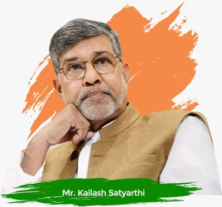

MR.KAILASH SATYARTHI

Kailash Satyarthi - Indian activist
some Important peace Treaties
1949 - Karachi Agreement
The Karachi Agreement of 1949 was signed by the military representatives of India and Pakistan, supervised by the United Nations Commission for India and Pakistan, establishing a cease-fire line in Kashmir following the Indo-Pakistani War of 1947.[1] It established a cease-fire line which has been monitored by United Nations observers from the United Nations since then. The Security Council Resolution 39 of April 1948 established a UN Commission (United Nations Commission for India and Pakistan — UNCIP) to mediate between India and Pakistan in order to bring about a cessation of fighting in Kashmir and to make arrangements for a popular plebiscite.1986 - Mesoram Peace Accord
The Mizoram Peace Accord, 1986 was an official agreement between the Government of India and the Mizo National Front (MNF) to end insurgency and violence in Mizoram, India, that started in 1966.[1] The Mizo National Front was an organisation of Mizo secessionists led by Laldenga to fight for independence from India. The movement was basically due to lack of support from the government during the great famine (called Mautam) in Mizoram in the late 1950s. Political insurgency and social unrest ensued in the next decades. After a number of negotiations, the document titled Mizoram Accord, 1986: Memorandum of Settlement was finally signed on 30 June 1986. It is remarked as the most and only successful peace agreement in India after its independence from British Empire in 1947.[3][4] Pakistani Instrument of Surrender :The Pakistani Instrument of Surrender (Bengali: পাকিস্তানের আত্মসমর্পণের দলিল, Pākistānēr Atmasamarpaṇēr Dalil) was a written agreement that enabled the surrender of 93,000 soldiers of the Pakistan Armed Forces Eastern Command on 16 December 1971, thereby ending the Bangladesh Liberation War and the creation of the nation of Bangladesh. The day is commemorated as Victory Day, a national holiday, in Bangladesh; and as Vijay Diwas on the Indian military calendar.1966 - Tashkent Declaration
The Tashkent Declaration was a peace agreement between India and Pakistan signed on 10 January 1966 that resolved the Indo-Pakistani War of 1965. Peace had been achieved on 23 September by the intervention of the external powers that pushed the two nations to cease fire, afraid the conflict could escalate and draw in other powers.1947 - Treaty of Peace with Italy
The Treaty of Peace with Italy (one of the Paris Peace Treaties) was signed on 10 February 1947 between Italy and the victorious powers of World War II, formally ending hostilities. It came into general effect on 15 September 19471954 - Treaty of Pondicherry
APJ Abdul Kalam then a highly gifted research and development engineer scientist is received Padma Bhushan Award.1952 - Treaty of Peace Between Japan and India
The Treaty of Peace Between Japan and India was a peace treaty signed on June 9, 1952 restoring relations between the two nations. The British Empire, of which India was a part, had full diplomatic relations with Japan became involved in World War II. After the war Japan was under U.S. occupation and India gained its independence on August 15, 1947. In 1951, the San Francisco Peace Conference was held with Indian Prime Minister Jawaharlal Nehru refusing to attend the conference,[1] because he considered the provisions of the San Francisco Treaty to be limiting Japanese sovereignty, as seen to this day with the San Francisco System managed by the US